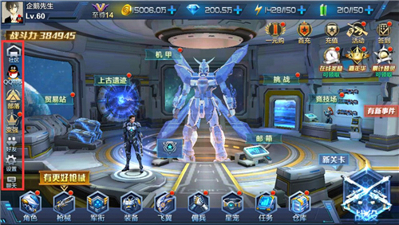

-
- 新手引导
- 角色建立
- 界面说明
-
1、开场介绍 在玩家安装好星际火线，并首次开启时，会进入新手引导！首先玩家会看到一段开场动画，我们可以通过开场动画了解星际火线的游戏背景及故事发展！
2、操作引导 在新手引导中，系统会通过简单的关卡对玩家进行引导，教大家基础的操作及武器、机甲的使用！游戏画面左下角有一个圆圈状的虚拟按钮，玩家通过滑动虚拟按钮控制人物的移动。而右下角分别有三个武器按钮，两个技能按钮和一个机甲按钮！玩家可以自由选择武器、机甲、技能的使用！
3、战斗引导 在新手引导中，系统会通过简单的关卡对玩家进行引导，教大家基础的操作及武器、机甲的使用！游戏画面左下角有一个圆圈状的虚拟按钮，玩家通过滑动虚拟按钮控制人物的移动。而右下角分别有三个武器按钮，两个技能按钮和一个机甲按钮！玩家可以自由选择武器、机甲、技能的使用！
-
1、登陆界面 当玩家通过新手引导后，便会进入登陆界面！玩家在这里可以看到【与微信好友玩】、【与QQ好友玩】两个按钮，分别是微信登陆和QQ登陆通道。玩家可以根据自己的需要，选择并使用对应帐号登陆星际火线！
2、区服选择 当玩家进入游戏后，可以通过点击选区进入服务器选择界面，这里有很多服务器可以供玩家选择！玩家选择区服后，便可正式进入游戏。
 3、角色建立
星际火线设有男、女两种角色，玩家选择自己喜欢的角色后，输出昵称便可进入游戏。
3、角色建立
星际火线设有男、女两种角色，玩家选择自己喜欢的角色后，输出昵称便可进入游戏。
-
1、活动 活动系统处于游戏主界面的右上角，充值活动、签到奖励、在线奖励、嘉年华、累积登陆应有尽有，玩家可以通过各种福利活动活动更多资源和道具，从而更好的提升自己的战斗力。
2、主体界面 当玩家进入游戏后，会看到角色、机甲等标志，这是星际火线的主要界面！各种福利、不同的副本、竞技入口都在这里。点击机甲，还可以进入机甲界面，进行解锁、强化机甲！往右拖动后，还可以看到商店、军团、生活区、排行榜、科技实验室等玩法哦！
3、社交 在主界面的左侧一览中，为星际火线的社交系统区域！这里有社区、部落、好友、聊天等功能，玩家可以随心所欲的和小伙伴交流游戏心得！
 4、装备 在屏幕的正下方是星际火线的装备系统栏，角色、枪械、军衔、装备、飞翼、佣兵、星宠、任务、仓库入口都在这里，玩家可以通过强化各种装备提升自己的战斗力。
5、副本 在主界面的右下角，有战役副本入口。玩家通过战役副本可以了解并参与剧情，挑战高难度关卡，获得更多的资源！
-
- 角色系统
- 装备系统
- 任务系统
- 福利系统
- 仓库系统
- 商店系统
-
1、系统简介 角色系统是星际火线中的基础系统，角色系统是一个非常精彩多样的系统！其中涵盖角色、技能、衣橱、天赋、枪械图鉴、成就、机甲图鉴、能量晶石、巅峰技能等9个玩法！
2、角色名片 角色名片是角色系统中的基础，玩家可以在角色名片中看到玩家的基础信息！比如角色属性、装备、机甲、的播放机、段位、军衔等，玩家可以通过角色名片了解自己角色的战斗力!
3、角色技能 角色技能是玩家在战斗中的辅助技能，玩家可以通过提高角色等级获得角色技能，并且装备在技能栏中，以便于在战斗中释放。角色技能是主动技能，不同的技能具有不同的实战效果。
4、衣橱 衣橱是星际火线中的时装系统，玩家可以在各种玩法中获取衣服、发型、翅膀幻化外观等到道具，然后再通关衣橱装备在角色身上，让角色变的更加炫酷！而且角色的衣服、发型、幻化都有加成属性哦。
5、角色天赋 天赋系统是角色的被动技能，玩家可以通过开启天赋、提升天赋等级，来获得更高的战斗力。如果玩家对天赋的加点不满意，也可以通过重置按钮，重置所有的天赋点。
6、巅峰技能 当角色满级之后再获得经验，将会获得巅峰等级！当玩家的每次提升巅峰等级时，可以获得巅峰技能点升级巅峰技能。巅峰技能同属被动技能，可以在各方面提高玩家的战斗力。
-
1、装备 装备是由6个部件组成，玩家可以通过战役、时空战役获取装备！并且当玩家达到一定等级时，可以开启装备强化、升星等操作，从而提升战斗力。
2、枪械 枪械是星际火线中的核心装备，玩家可以通过各种玩法获取强大的枪械，并且进行升品、升星、升级等操作，从而提高输出能力。而且枪械还拥有强大的被动技能，可以帮助玩家在副本、竞技场中打出更高的伤害。不同品级的枪械，威力也是不一样的哟！
3、飞翼 飞翼是星际火线中一种特殊装备，玩家获取飞翼后，可以进行装备，并且搭配组件，获得极高的战斗力加成。而且飞翼可以幻化成各种炫酷的翅膀外观，让玩家的角色更加炫酷。
4、佣兵 佣兵是玩家征战各种副本的好伙伴，佣兵不但可以在副本中帮助玩家战斗，还能提供战力加成。而且佣兵也可以使用枪械、装备、技能。玩家升级佣兵，可以获得更多的战斗收益。
-
1、日常任务 日常任务是玩家在星际火线中必做的任务，玩家每天完成对应的日常任务，可以获得大量的升级经验！
2、成就任务 成就并不是在任务系统中，玩家可以通过角色系统进入成就任务界面。成就任务分为三种，分别是养成、战斗、交互。完成不同的成就任务，可以获得大量的钻石、道具等奖励。

-
1、累积登录 当玩家进入星际火线后，便可以参与累积登录活动。每天登陆星际火线即可领取福利，海量金币、超神武器、炫酷机甲任你拿！
2、开服嘉年华 开服嘉年华是限时活动，玩家可以通过完成嘉年华的活动，获得大量的钻石、机甲碎片、枪械升级材料、枪械碎片等珍惜道具。但开服嘉年华只能在开服的前7天参与哦！
3、签到有礼 签到活动是星际火线中最基本的福利活动，玩家每天登陆星际火线，便可以点击领取奖励。累积一定的签到天数，还能领取额外的奖励。玩家如果少签或漏签，也可以通过补签找回奖励。
4、活动福利 活动福利包括很多种，比如资源找回、新兵补给包、贸易大促销、积少成多、月卡福利、成长基金。玩家进入星际火线后，可以根据自己的需求，参与并获得奖励。
5、在线有礼 在线有礼是在线时间奖励，玩家在线达到一定的时间后，可以领取对应的在线奖励。玩家每天在线120分钟，便可领取全部奖励。
-
1、仓库分类 仓库是玩家的储存系统，玩家的一些道具、枪械都可以在仓库中找到。仓库系统分为两个，分别是枪械仓库和道具仓库！
2、枪械仓库 玩家点击进入仓库后，最先看到的就是枪械仓库！而且枪械仓库根据枪械的系别，分为突袭系、毁灭系、特殊系，玩家可以根据自己想要的枪械类别，快速的找到对应的枪械。
3、道具仓库 道具仓库主要存放玩家的一些消耗道具，比如枪械升品材料箱、宠物经验材料、觉醒石、货柜钥匙等物品。
-
1、商店入口 游戏商店是玩家购买装备和道具的地方，玩家可以直接在推荐类别中购买各种装备、道具！不过星际火线中的商城入口是单独设计的，玩家在进入游戏后，向右拖动界面，便可以找到商店入口！
2、神秘货柜 神秘货柜是星际火线中的抽奖系统，玩家可以花费钻石开启货柜，并随机获得海量道具。而且玩家每开启一次神秘货柜，便可以获得1点信誉点。当玩家获得足够的信誉点后，可以通过信誉点兑换，兑换一些珍惜道具！
3、地下集市 道具仓库主要存放玩家的一些消耗道具，比如枪械升品材料箱、宠物经验材料、觉醒石、货柜钥匙等物品。
4、最强兵王商店 最强兵王商店是竞技商店的一种，玩家可以在最强兵王商店中购买紫色武器碎片、机甲碎片等道具。不过在最强兵王商店中，玩家需要花费攻擂点购买道具。而攻擂点则需要玩家在竞技玩法的最强兵王中获取。
5、竞技场商店 顾名思义，竞技场商店是专属竞技玩法的商店！如果想要购买竞技商店中的道具，则需要在竞技技场中获得足够的竞技场功勋才行哦！
6、军团商店 军团商店是军团专属商店，首先玩家要加入军团，然后通过军团捐献或军团中的各种玩法，获得军团贡献点。然后才能通过军团商店，购买对应的道具。
-
- 副本系统
- 竞技系统
-
1、战役副本 战役副本是星际火线中的剧情副本，分为主线、精英、时空三个系列！玩家可以通过战役副本获取经验、道具，提升自身的等级和战斗力。其中时空副本可以产出大量的装备，玩家可以多多参与。
2、上古遗迹 上古遗迹是星际火线中飞翼的重要产出地，玩家可以以单人、组队的形式挑战各种上古文明遗迹。不同难度的上古遗迹，会掉落不同品级的飞翼。如果玩家达到至尊8，还可以开启宝藏功能，直接破坏宝箱获得奖励。
3、挑战一一全息训练场 全息训练场有三种，分别是产出金币的黄金国度；产出枪械经验卡的极速战场，以及产出佣兵经验卡的虚空星源。全息训练场中的每种玩法每天可以挑战三次，挑战成功便可获得对应的奖励。
4、挑战一一丧尸围城 丧尸围城也是挑战系列玩法之一。玩家从第一层开始逐层挑战大量的丧尸，丧尸的难度会随着挑战层数的增加而变大，不过玩家也可以通过奖励层获得增益BUFF，提高自己的通关能力。丧尸围城玩法主要产出机甲碎片、金币、枪械经验卡等经验道具！
5、挑战一一异次元杀阵 玩家首次解锁异次元杀阵后，将会被自动分配到一个最多10人组成的小组。玩家每次可以选择任意四个关卡进行闯关，闯关成功后则可以挑战BOSS并获得击败BOSS的奖励。系统将会以玩家本日最好的挑战成绩进行排名，并结算奖励。异次元杀阵主要产出晶石宝箱，可用来镶嵌在装备上。
6、挑战一一迷失空间 迷失空间可以为玩家提供金币、星宠食物等奖励，迷失空间作为日常挑战，玩家失败后可以再次挑战，通关层数越高，奖励也越加丰厚哦，且至尊10即可开启精英难度。
7、无尽位面 无尽位面有两种玩法，分别是位面入侵和位面裂隙。位面入侵玩法需要两名旺季合作战斗，抵御入侵位面的生物，在一定的时间内，保护位面控制塔。 而位面裂隙则是限时活动，玩家可以在活动时间内进入位面裂隙，对【收割者格萨拉】进行攻击，玩家造成的伤害越高，排名越靠前，获得的奖励也越多！
-
1、最强兵王 最强兵王是星际火线中的自动竞技玩法，玩家自主选择对手进行膜拜或攻擂！如果战斗胜利，若防守方的排名高于进攻方，双方排名对调！玩家每天可以发起5次免费挑战，挑战成功可提升排名，当玩家到达一定的排名后，可以获得丰厚的排名奖励。
2、竞技场 竞技场中玩法比较多样化，玩家可以自由选择1V1、3V3或终极大乱斗进行对战。其中1V1是单人竞技，而3V3是组队竞技。大乱斗则是系统随机匹配6名玩家，各自为战并争夺最后的胜利！在竞技场玩法中，玩家可以获得枪械碎片、竞技场功勋等道具。
-
1、军团系统 最强兵王是星际火线中的自动竞技玩法，玩家自主选择对手进行膜拜或攻擂！如果战斗胜利，若防守方的排名高于进攻方，双方排名对调！玩家每天可以发起5次免费挑战，挑战成功可提升排名，当玩家到达一定的排名后，可以获得丰厚的排名奖励。
2、好友系统 在星际火线中，好友系统也是经过精心设计的哟！系统会将玩家的好友分为QQ/微信好友和游戏好友，让大家更清楚的找到自己的小伙伴。而且好友系统中设置了好友礼品，大家千万不要忘了为小伙伴送个好礼。 为了让大家更好的体验游戏，避免被自己不喜欢的人骚扰。星际火线还为玩家设计了黑名单，不想见到的人，统统把他们扔进黑名单吧！
3、聊天系统 聊天系统是星际火线中最主要的社交方式，玩家可以在聊天界面自由选择世界、军团、好友、组队、公告频道，和自己的队友、伙伴进行沟通。
-
1、军衔系统 军衔系统是星际火线中的成就玩法之一，当玩家参与各种玩法，并且满足一定的条件即可提升军衔等级。当玩家提升军衔等级时，可以获得枪械、机甲和相应的军衔属性。
2、排行榜 排行榜是一种公开的成就系统！玩家在星际火线各种玩法中获得的成就，都将在这里展示，并且被所有的玩家看到。排行榜中分别设置了战力榜、最强兵王榜、军团榜、魅力榜、鲜花周榜、丧尸围城、星宠榜等，只要你有足够的实力，必然可以登顶星际！